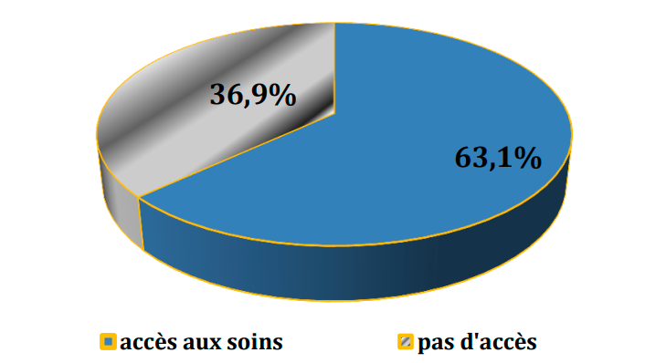

Nombre d’années d’abandon scolaire
La proportion d’enfants ayant abandonné les études depuis plus de deux ans a
augmenté de 2,8%, la probabilité pour ces derniers de revenir dans le système scolaire
augmente de plus en plus
Motif d’abandon scolaire
| Raison pour quitter l'école ? |
% |
| Etudes terminées |
2,5 |
| Manque de moyen |
81 |
| Pas de tuteur |
3,2 |
| Echec scolaire |
4,9 |
| Ecole éloignée |
1,4 |
| Autre |
7 |
| Total |
100 |
Comme pour la première étude, résultats de celle-ci confirme en plus que la cause
principale d’abandon scolaire des enfants est le manque de moyens financiers selon
81% d’interviewés. D’autre part, les proportions des échecs scolaires et d’enfants sans
tuteurs ont augmenté. Les enfants interviewés manifesteraient l'intérêt pour les études.
Ils reconnaissent qu'il est avantageux d'étudier, mais ils manquent des moyens pour
répondre. Pour certains, le niveau de vie du père (qui est sensé être le principal
pourvoyeur des frais scolaires) ne suffit pas pour répondre à des telles obligations.
Ce qui est paradoxal c'est que l'enfant lui même n'arrive pas à se prendre en charge
grâce à son butin propre.
Orphelins d’un parent (père ou de mère)
36,6% d’enfants interviewés sont orphelins d’un des parents (de père ou de mère
seulement). Le décès d’un parent déséquilibre la famille entière. Ainsi, exercer une
activité économique est la première stratégie à appliquer pour les enfants de ces familles
sinistrées. Les carrières constituent pour ces enfants un lieu de réussite facile. Ils s’y
rendent soit accompagnés soit seuls.
Orphelins de deux parents
La perte de tous les deux parents déstabilise les enfants. De tels enfants se
retrouvent sous tutelle d’autres personnes qui ne s’occupent pas souvent d’eux de la
même façon que leurs propres parents. Ils commencent très tôt à exercer des activités
pouvant leur permettre de se prendre en charge. L’étude actuelle montre que 17,4%
d’enfants vivant dans les carrières minières sont orphelins de deux parents. Cette
proportion a diminué par rapport au premier trimestre de l’année 2014 où elle était
estimée à 22,7%. Néanmoins, elle est toujours importante. La riposte équivalente ce qui
soit très efficace consisterait à soutenir les ménages, les activités de prise en charge
des O.E.V et surtout les ménages d'accueil qui s' y prêteraient le mieux. Les activités
de réinsertion socioéconomiques bien menées faciliteraient la réinsertion de ces
enfants vulnerables.
Nombre de repas consommés par jour
Environ 7 enfants sur 10 prennent deux repas par jour dans les carrières où ils
exercent leurs activités. La plupart d’enfants sont préoccupés par leur alimentation. Ils
travaillent parfois contre la nourriture qu’ils reçoivent comme rémunération. Cette
situation n’a pas beaucoup changé durant les trois dernières années.
Nombre de repas à la maison
| Nombre de repas à la maison |
% |
| Aucun repas |
13,2 |
| 1 repas |
82,1 |
| 2 repas |
3,6 |
| 3 repas |
1,1 |
| Total |
100 |
La proportion d’enfants qui prennent plus d’un repas par jour est très faible (4,7%).
Celle des enfants ne prenant aucun repas à la maison a augmenté d’environ 9%.
En effet, les économies des ménages d’où proviennent ces enfants sont souvent modiques.
Ils ne peuvent pas avoir la possibilité de nourrir les enfants plus d’une fois par jour. Ceci
peut pousser les enfants à trouver un endroit où ils peuvent compléter leur alimentation
avec un repas supplémentaire contre le travail.
Nombre de repas dans la carrière
| Nombre de repas |
% |
| Aucun |
7,6 |
| 1 repas |
86,4 |
| 2 repas |
6,0 |
| Total |
100 |
Plus de 90% d’enfants travailleurs dans les mines prennent au moins un repas
dans les carrières ; c’est dans ces carrières qu’ils mettent beaucoup plus d’heures en
train de travailler, ils doivent se ressourcer en énergie pour tenir le coup pendant la
journée. Toutefois, la proportion de ceux qui ne consomment aucun repas a diminué de
moitié alors que celle d’enfants prenant un repas a augmenté d’environ 11%. L’ampleur
qu’avaient les activités diamantifères dans les années ne l’est pas ces jours, la facilité
d’attraper de l’argent facile dans les carrières n’est plus courante. Signalons qu’aucun
enfant n’a témoigné avoir consommé plus de deux repas dans la carrière alors que les
deux années écoulées, certains d’entre eux pouvaient y parvenir.
Réponses des enquêtés selon les interdits alimentaires
La proportion d’enfants avec des interdits alimentaires a diminué d’environ 3%.
Certains ménages, suite aux difficultés qu’ils rencontrent dans la prise en charge des
enfants, ne favorisent pas la pratique des interdits alimentaires. Quelques uns sont des
enfants ayant eux même décidés d’arrêter avec cette pratique qui les prive parfois des
opportunités à se nourrir.
Accès aux soins de santé en cas de maladie

Le taux d’accès aux soins de santé des enfants travaillant dans les carrières
minières a diminué ; il passe de 68,8% à 63,1% entre le premier trimestre 2014 et le
premier trimestre 2016. Les activités des carrières tournent en mal. Les parents ne
savent pas répondre à ce besoin avec le faible revenu qu’ils réalisent.
Raison pour ne pas accéder aux soins de santé en cas de maladie
Malgré les travaux durs qu’exercent les enfants dans les carrières, environ 76,8%
d’entre eux ont déclaré manquer de l’argent pour les soins de santé. Par contre, pour
certains d’entre les répondants (13,1%), les structures de santé sont plus éloignées.
Cependant, certains ont déclaré ne pas trouver du temps pour rechercher les soins de
santé lorsqu’ils sont malades, trop pris par leurs activités de routine.
.png)